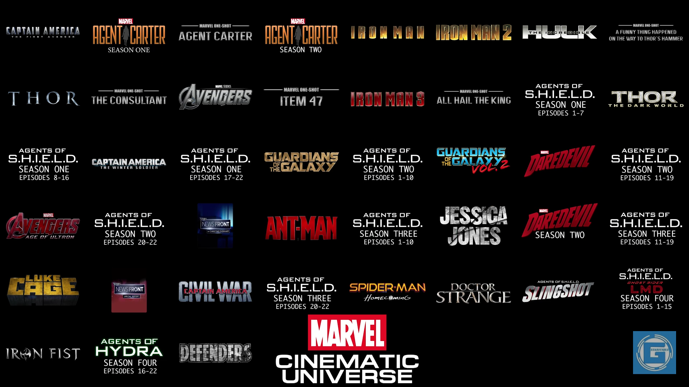

Vũ Trụ Điện Ảnh Marvel
Trước năm 2005, dù những loạt phim X-Men hay Spider-Man dựa trên những nhân vật của Marvel Comics đã rất thành công trên màn ảnh rộng, thực tế lợi nhuận mà hãng thu về là rất thấp. Các bộ phim trên đều là do Marvel bán bản quyền cho những hãng phim như Columbia Pictures, New Line Cinema hay 20th Century Fox thực hiện và Marvel chỉ đứng tên ở vị trí đồng sản xuất. Chính vì lẽ đó, chủ tịch Marvel Studios là Kevin Feige nảy ra sáng kiến về việc tự mình đưa lên màn ảnh các nhân vật chính của nhóm The Avengers mà hãng này vẫn đang nắm bản quyền. Điều đặc biệt của kế hoạch này chính là việc Marvel muốn sản xuất những tập phim riêng lẻ về những người hùng chính ở trong cùng một vũ trụ, trước khi đưa họ vào chung một bộ phim. Đó là sự khởi đầu của Marvel Cinematic Universe. Đây là một ý tưởng chưa từng có trước đó, bởi không dễ để có một sự liên kết liền mạch, chặt chẽ giữa các bộ phim trị giá hàng trăm triệu USD trong nhiều năm liền. X-Men từng là hình mẫu tiên phong cho việc đưa nhiều siêu anh hùng vào cùng một bộ phim, nhưng ngay từ đầu các dị nhân đã được giới thiệu như một tập thể chứ không có các tác phẩm riêng lẻ về Wolverine, Magneto hay giáo sư X… trước đó.
Marvel thì khác biệt, với kế hoạch chia làm ba giai đoạn. Giai đoạn một được bắt đầu từ năm 2008 với phần đầu tiên của Iron Man. Sau hai tập phim riêng về Iron Man do Robert Downey Jr thủ vai và ba bộ phim về Hulk (Edward Norton), Thor (Chris Hemsworth) cùng Captain America (Chris Evans), giai đoạn một kết thúc với The Avengers (2012) quy tụ tất cả siêu anh hùng trên cùng nhau chống lại đạo quân của Loki (Tom Hiddleston).
Tất cả phim kể trên đều được đặt bối cảnh vào cùng một vũ trụ, với sự khác biệt đáng kể nhất chỉ là việc nam diễn viên Edward Norton vào vai Hulk được thay thế bởi Mark Ruffalo trong The Avengers. Những nhân vật như điệp viên Phil Coulson (Clark Gregg) của tổ chức S.H.I.E.LD hay Nick Furry (Samuel L. Jackson)… xuất hiện trong hơn một tập phim, đem lại cảm giác gắn kết cho khán giả. Các nhà làm phim còn khéo léo cài cắm những chi tiết về tập đoàn Stark Industries của Iron Man vào The Incredible Hulk, để chiếc khiên trứ danh của Captain America và chiếc búa của Thor xuất hiện trong Iron Man 2… kích thích trí tò mò của người hâm mộ.
Những bộ phim riêng lẻ đó giống như những mảnh ghép, sau đó được Marvel ráp lại thành bức tranh hoàn chỉnh mang tên The Avengers, kết thúc giai đoạn một. The Avengers đã thu về tới 1,5 tỷ USD trên toàn cầu và trở thành bộ phim ăn khách thứ ba trong lịch sử, đủ thấy canh bạc của Marvel đã thành công rực rỡ.
Để có được sự liền mạch giữa các bộ phim, Marvel Studios đã phải đảm bảo ngay từ trước khi ký hợp đồng với các đạo diễn rằng họ ủng hộ ý tưởng “chung một vũ trụ” và cài cắm những chi tiết gợi ý tới nhóm Avenger vào bộ phim của mình. Những đạo diễn như Kenneth Branagh, Joe Johnston, Jon Favreau… đã thực hiện tốt ý tưởng trên, trước khi nhường lại The Avengers cho nhà làm phim Joss Wheldon.
Bản thân các diễn viên cũng được ký hợp đồng dài hạn để xuất hiện trong nhiều tập phim và bảo đảm sự quen thuộc cho khán giả, như ngôi sao Samuel L. Jackson sẽ xuất hiện trong tổng cộng 9 bộ phim Marvel. Ngoài ra, để bổ trợ cho những bộ phim ngoài rạp, Marvel còn có loạt phim ngắn Marvel One-Shots cùng loạt phim truyền hình Agent of S.H.I.E.L.D.
Kể từ khi Nick Fury xuất hiện trong Iron Man, chỉ trong vòng 9 năm, Marvel Studios đã cho ra mắt đến 14 phim điện ảnh cùng các loạt phim truyền hình với nhiều dự án lớn nhỏ kéo dài từ nay cho đến sau năm 2020.